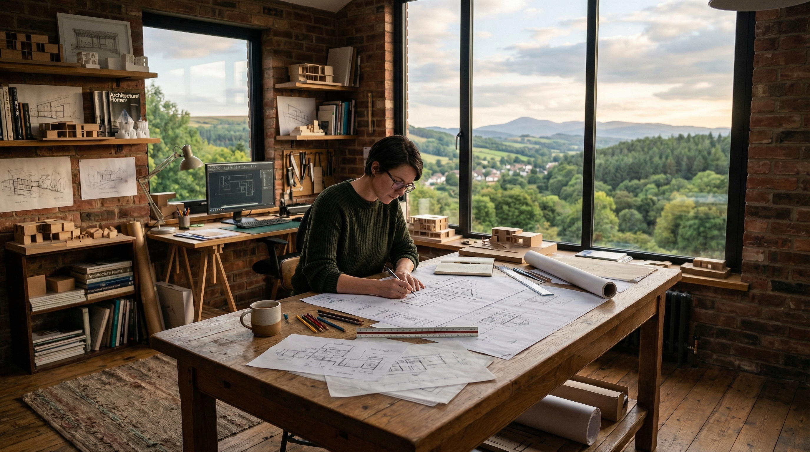

ディレクション
現地導線の確認、課題整理、社内共有の起点づくりを担当します。
About

Team Stance
Wide Horizon は、景観を美しく見せるだけでなく、施設運営が続けられる導線に落とし込むことを重視しています。運営・設計・撮影の三者で会話し、現場の負荷とブランド体験の両立を探ります。
Team Structure
現地導線の確認、課題整理、社内共有の起点づくりを担当します。
館内の視線抜け、回遊、サインや案内物の整合を見直します。
媒体別の写真役割を整理し、現地体験と公開導線のズレを減らします。
Judgement
景色が良いかではなく、「その景色が適切な順番で届いているか」を見ます。到着直後の印象、夜の回遊、公開導線との整合を必ず確認します。
Best Fit
新規開業前の導線整理、改装後の見せ場再定義、写真やコピーの見直し、夜間の魅力訴求を強めたい宿泊施設に向いています。
Working Style
現地同行が理想ですが、資料共有のみでも初回整理は可能です。必要に応じて撮影チームや設計事務所との打ち合わせにも参加します。
Working Principle
写真映えのためだけに導線を変えるのではなく、滞在体験の流れとして成立するかを優先します。
運営スタッフの説明負荷や清掃動線を悪化させる提案は避け、続けられる改善に絞ります。
現地での良さが公開導線で抜けないよう、撮影、見出し、導線、館内案内を同時に見直します。
Consultation
運営視点の悩みから入っても構いません。
現地写真やサイト URL があれば、初回相談の精度を上げられます。